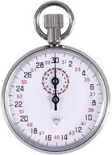

A stopwatch is a timepiece designed to measure the amount of time that elapses between its activation and deactivation. A large digital version of a stopwatch designed for viewing at a distance, as in a sports stadium, is called a stop clock
Import Module
import tkinter as tkHow to Set Up Stop Watch with Python
Before we start defining a few important functions, let's create a Stop Watch.
import tkinter as tk
running = False
hours,minutes,seconds = 0,0,0
def start():
global running
if not running:
update()
running = True
def pause():
global running
if running:
stopwatch_label.after_cancel(update_time)
def update():
global hours,minutes,seconds
seconds+=1
if seconds==60:
minutes+=1
seconds = 0
if minutes==60:
hours+=1
minutes = 0
hours_string = f'{hours}' if hours > 9 else f'0{hours}'
minutes_string = f'{hours}' if minutes > 9 else f'0{minutes}'
seconds_string = f'{seconds}' if seconds > 9 else f'0{seconds}'
stopwatch_label.config(text = hours_string + ':' + minutes_string + ':'seconds_string)
global update_time
update_time = stopwatch_label.after(1000, update)
root = tk.Tk()
root.geometry("450x220")
root.title("StopWatch by Vishwajeet Coder")
stopwatch_label = tk.Label(root ,text='00:00:00', font=("Arial", 80))
stopwatch_label.pack()
start_Button = tk.Button(root, text="Start" ,width=5, height=2, font=('Arial', 20)command=start)
start_Button.pack(side = tk.LEFT)
pause_Button = tk.Button(root, text="Stop", width=5, height=2, font=('Arial', 20command=pause,)
pause_Button.pack(side = tk.RIGHT)
root.mainloop()